Подключение
Сервоприводы
Для управления водяным теплым полом и водяными радиаторами используются нормально-открытые сервоприводы (NO) 220В. Можно использовать любые сервоприводы, в зависимости от конкретной системы отопления. Для управления подачи теплоносителя теплого пола сервоприводы устанавливаются на коллектор теплого пола. Сервоприводы можно объединять в группы.
Для управления радиаторами, сервоприводы устанавливаются, либо на коллектор, либо непосредственно на радиатор, в зависимости от конкретной системы отопления Сервоприводы подключаются к любому выходу контроллера на NO контакт.
Рекомендуемые модели сервоприводов
-
STOUT STE-0010 Электротермический компактный сервопривод, нормально открытый.
-
Gappo G461 220B Сервопривод нормально открытый.
-
Gappo G463 220B Сервопривод нормально открытый.
-
Или аналогичные.
Схема подключения сервоприводов
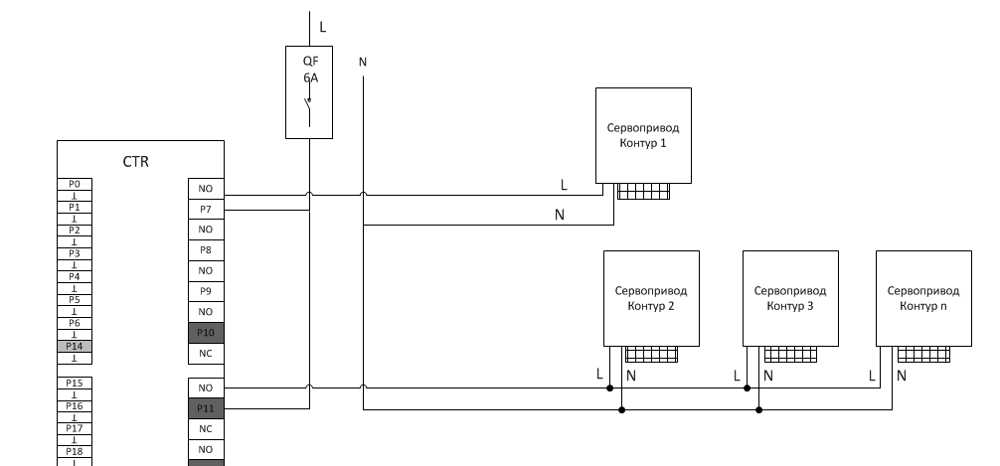
Котёл
Для подключения котла к контроллеру используем контакты подключения комнатного регулятора температуры на клеммной колодке котла и любой NC выход контроллера. При размыкании цепи контроллером котел будет выключать режим отопления, оставаясь в режиме подогрева воды. По такому принципу подключаются большинство электрических и газовых котлов.
Пример подключения электрического котла Vaillant 18/14.
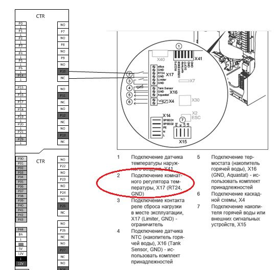
Датчик температуры воздуха
Датчик температуры построен на базе DS18B20 и использует интерфейс 1wire. Подключается к любому цифровому входу. Р14,Р29,Р30-Р44.
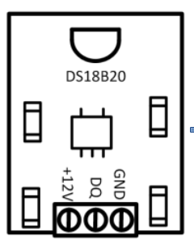
Характеристики датчика:
| Электропитание | 12в |
| Диапазон измеряемых температур | От -55 до +125 |
| Протокол | 1-Wire |
| Способ монтажа | Скрытый, в подрозетник или в корпус |
Схема подключения:
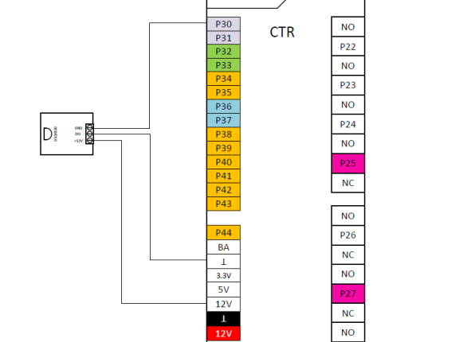
Датчик температуры тёплого пола
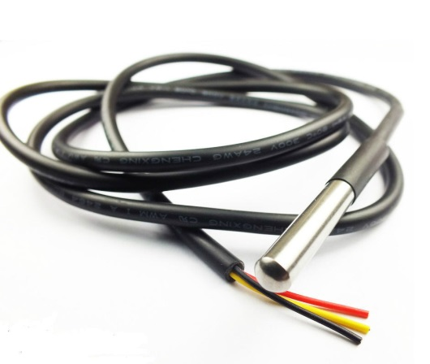
Датчик температуры построен на базе DS18B20 и использует интерфейс 1wire. Подключается к любому цифровому входу. Р14,Р29,Р30-Р44 через плату сопряжения.
Характеристики датчика:
| Электропитание | 12в |
| Диапазон измеряемых температур | От -55 до +125 |
| Протокол | 1-Wire |
| Способ монтажа | Скрытый, в стяжку пола |
Схема подключения:
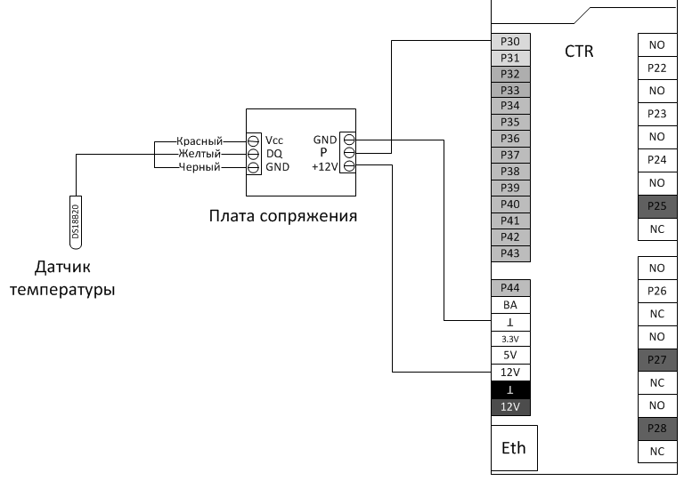
Монтаж датчика
Для датчика температуры теплого пола закладывается гладкостенная труба до заливки стяжки пола. Труба должна выходить над витками теплого пола, но находится в стяжке. Закладную трубу можно поднять до выключателя или коробки Датчика температуры воздуха и произвести там коммутацию.
Способ монтажа датчика в стяжку пола:
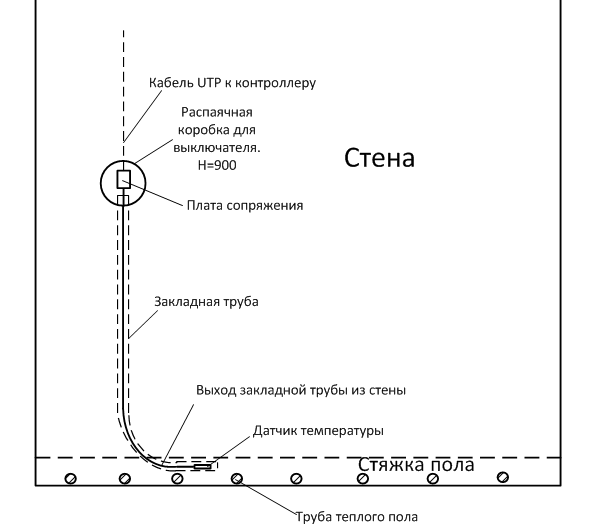
-
При монтаже закладной трубы избегать прямых углов изгиба. Для беспрепятственного монтажа датчика температуры
-
Конец закладной трубы должен находиться над трубами теплого пола 20см от стены
Датчик температуры и влажности
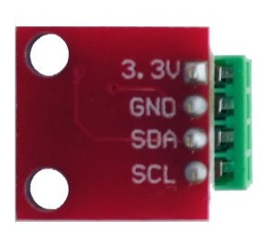 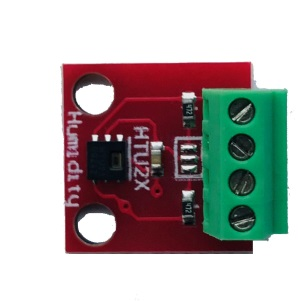
Комбинированный датчик температуры и влажности устанавливается в основном в санузлах и в помещения, где необходимо принудительно включать вентиляцию.
HTU21D - крохотный цифровой датчик для шины I2C. Размеры его платы всего 15 х 15 мм. HTU21D может выдавать значение, как влажности, так и температуры. Подключение датчика производится на два любых цифровых порта контроллера. Р30-Р43, Р14,Р29 Питание 3.3В тоже берем с соответствующего выхода контроллера.
Рекомендуем устанавливать датчик на высоте 1,6-1,7 м. Кабель подключения UTP5e.
Схема подключения
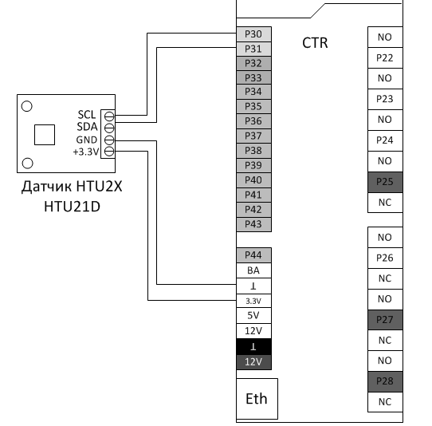
Уличный датчик температуры и освещённости
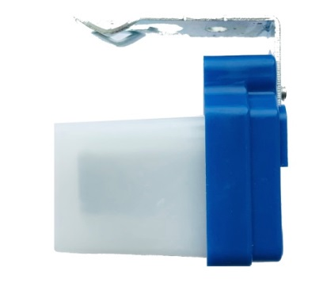 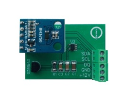
Комбинированный уличный датчик температуры и освещенности монтируется на несолнечной стороне дома. Подключение датчика производится на три любых цифровых порта контроллера. Р30-Р43, Р14,Р29 Питание 12В тоже берем с соответствующего выхода контроллера. Кабель подключения UTP5e.
Схема подключения
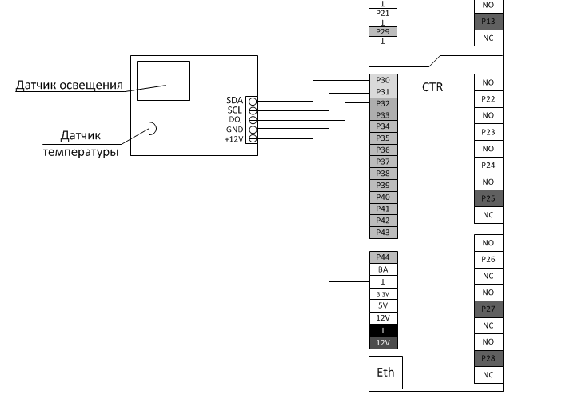